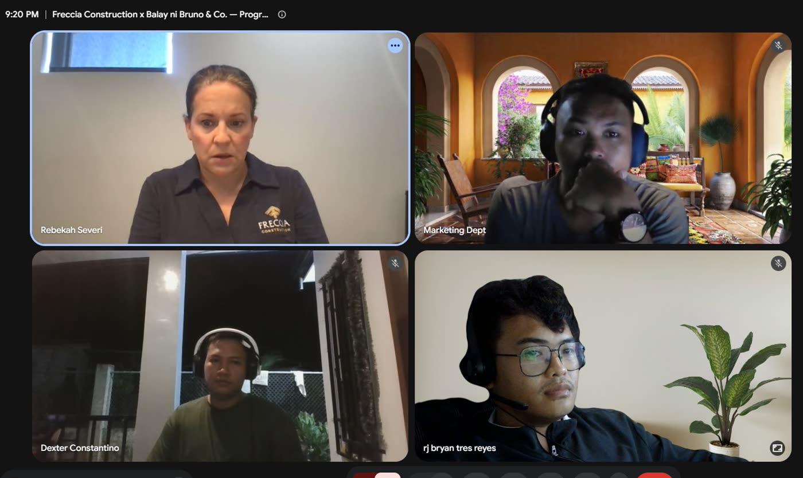
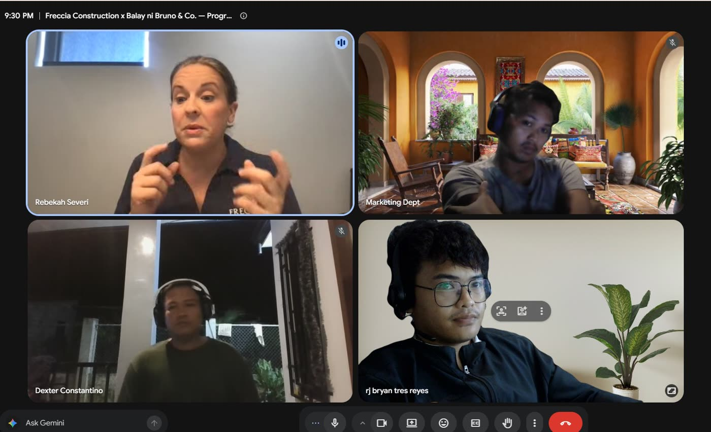

Ask ten agencies about support and you will get ten versions of the same sentence. We are responsive. We are always here. We treat you like a partner. None of it means anything, because the agency that went quiet on you last year said it too.
So we are going to skip the adjectives. What follows is Tuesday, 18 August 2026, with Freccia Construction, a custom builder in Austin, Texas. Nothing about that day was staged or scheduled for a case study. It was an ordinary working day that happened to be well documented, which is the only reason we can show it to you.
An Ordinary Tuesday
The client raises that our posting times are wrong for her audience. Noon is a dead hour for her market, and she wants the schedule moved. Answered the same minute, and handed to Ryan on our side by 5:33.
She sends a screenshot. The logo is stretching oddly on her husband's phone, though it looks correct on hers and on her laptop. A minute later Ryan has the cause, the button spacing beside it is squeezing the logo at certain widths, and it goes on the fix list.
The long call. Four of us on it: the client, plus RJ, Ryan and Dexter from our side. Not a status update, an actual working session about what happens next.
The call ends. One hour and twenty five minutes covering search, social, lead follow up, which service areas to build pages around, and where the business wants to be next year.


Notice who is talking in both photos. A support call where the agency presents for an hour is not a support call, it is a performance. The useful ones are mostly the client telling you what is actually going on in their business.
The Three Layers
That Tuesday was not luck. It works because support runs on three layers, and each one catches something the others would miss.
The daily check
Every site we manage gets looked at each morning, whether or not anyone reported a problem. We find the fault, fix one, and put it live. Most issues get caught before the owner ever sees them.
The group chat
One chat per client with the whole team already in it. No ticket number, no shared inbox, no forwarding. The person who can fix it is reading it as you send it.
The monthly call
An hour or more, once a month, for the decisions that do not belong in a chat thread. Where the business is going, what to build next, what is not working.
The layers matter more than any one of them alone. Daily checks without a chat means you find problems the client did not know they had, but they cannot reach you when something urgent lands. A chat without a monthly call means you spend a year being responsive and never once step back to ask whether the whole plan is right. And a monthly call on its own is just a meeting.
Why Same-Minute Answers Are Not Heroics
A one minute reply sounds like someone dropped everything. It is the opposite. It is what happens when you remove the steps between a client's message and the person who can act on it.
Most support is slow for structural reasons, not lazy ones. The client emails a general address. Someone reads it and decides who it belongs to. It gets forwarded. That person is on something else and gets to it tomorrow. Nobody in that chain did anything wrong, and the client still waited a day for a two minute fix.
We took the chain out. The client is in a chat with the people who do the work, so the routing step does not exist. That is the entire trick, and it is worth being honest that it is not clever. It is just a decision about where messages land.
What to ask before you hire anyone
- Who exactly will I be talking to, and are they the person doing the work?
- What happens on a normal day when nothing is wrong? If the answer is nothing, that is your answer.
- When something breaks at 5:41 in the evening, where does that message go?
- How often do we step back and talk about the business, not the tasks?
- Ask them to show you a real day. Not a process diagram. A day, with times on it.
The Part We Will Not Pretend About
Not every message gets answered in a minute. Our team is in the Philippines and many of our clients are in the United States, so there are hours where you will be asleep and hours where we will be. Some fixes need a decision from the client before we can move, and those sit until the answer comes back.
What we will say is that nothing goes silent. If something is going to take a week, you hear that it is going to take a week. Most of the damage done by the agency before us is not slowness. It is not knowing.
Frequently Asked Questions
What happens after my website goes live?
The work changes shape, it does not stop. Going live is the moment a site starts meeting real people on real phones, which is exactly when small problems surface. The day after launch looks like the day before it: same chat, same team, same people answering.
How quickly do you answer when something breaks?
Usually the same minute, because there is no queue in between. See the 5:41 PM entry above. That is a normal evening, not a highlight.
Do I have to chase you for updates?
No. The daily checks run whether or not you raise anything, and the monthly call is already in the calendar. Nothing depends on you remembering to ask.
Is ongoing support an extra cost on top of the build?
No. It is the partnership. Balay ni Bruno & Co. does not sell projects that end and then charge you to keep them alive. The care is what you are paying for, and the build is simply the first thing the team does for you.